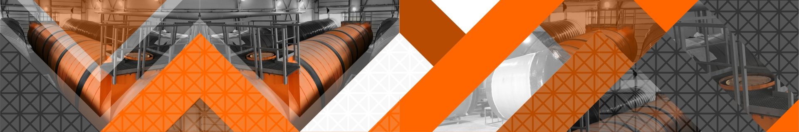

Огнеупорные материалы
О нас
Частное предприятие Рефактори является эксклюзивным представителем крупнейшей и всемирно известной компании "PLIBRICO COMPANY LLС" на территории Республике Беларусь, которая на протяжении ста лет является лидером по производству и применению периклазовых, монолитных и доломитовых огнеупорных материалов.
Продукция
Широкий ассортимент монолитных огнеупоров, поставляемый компанией Рефактори, способен удовлетворить все производственные требования. Торкрет массы, материалы для набивки, бетоны, а также формовочные пластичные материалы – далеко не полный спектр производимой продукции PLIBRICO COMPANY LLC.
Также, в перечень продукции, дополнительно к футеровкам, входят сборные огнеупорные материалы и анкерные системы.
Вся огнеупорная продукция, поставляемая компанией Рефактори, произведена в соответствии с нормами DIN EN ISO 9001, 9002 и при строгом контроле качества.
Инжиниринг
Компания Рефактори нацелена на продажи передовых огнеупорных технологий в Республике Беларусь. Предоставляя услуги по инжинирингу, мы стараемся учесть потребности и пожелания каждого клиента. Разработка чертежей, рабочие характеристики, просчет коэффициента тепловых потерь, список материалов, графики сушки, монтаж и инструкции по запуску и эксплуатации – это далеко не полный список предоставляемых услуг по сопровождению нашей продукции.
Монтаж
Также немаловажным фактором в работе с огнеупорными материалами являются сроки монтажа и дальнейший процесс эксплуатации. Компания Рефактори гарантирует своим клиентам эффективную техническую поддержку и современное монтажное оборудование, что в дальнейшем обеспечит длительный срок службы огнеупорной продукции. Мы предоставляем как услуги по монтажу поставляемых нами товаров, так и “шеф-монтаж”.
Мы будем рады сотрудничеству с Вами!
Ключевые направления деятельности
Комплексные поставки огнеупорной продукции для металлургического, цементного, алюминиевого, мусоросжигательного, теплоэнергетического и химического производств
Продажа специальных марок стали европейского производства и ферро-сплавов
Проектирование огнеупорной футеровки необходимых агрегатов
Инженерно-техническое обслуживание
Спектр огнеупорной продукции
Специальные материалы
Ферро-сплавы
Производство и монтаж емкостного оборудования
Основное направление деятельности АО «Флотенк» - изготовление емкостного оборудования,
а также поставка готовых изделий в любой уголок РФ и в государства ближнего зарубежья.
Наш завод поставляет вместительные емкости и резервуары любого типа
(вертикальные, горизонтальные), открытые и закрытые полуподземные и наземные цистерны.
Производство емкостного оборудования осуществляется из нержавеющей и углеродистой стали, изделия из которой эксплуатируются на дальнем севере при температуре – 60 0 С. Емкости из нержавеющей стали применяются в различных промышленных отраслях. Они не поддаются деформации, выдерживают большие нагрузки и не подвергаются коррозии.
Емкостное оборудование:
общая классификация
Используется емкостное оборудование для хранения газа и жидкости при проведении техпроцесса в химическом производстве. Выделяют несколько видов классификаций оборудования:
-подземные емкости, в которых максимальный уровень жидкости расположен относительно планировочной метки ниже чем 0,2 м;
-наземные – цистерны, в которых днище находится прямо на поверхности грунта;
-полуподземные – емкости, заглубленные в грунт частично. В них максимальный уровень жидкости может до 2-х метров быть выше относительно поверхности земли.
Типоразмеры вертикальных цистерн
| Вместимость, м3 | Вес изделия, кг | Высота цистерны, м | Диаметр бака, см |
| 200 | 1200 | 6 | 660 |
| 100 | 8000 | 6 | 470 |
| 400 | 19000 | 7,5 | 850 |
| 300 | 15000 | 7,5 | 760 |
| 700 | 26500 | 9 | 1040 |
| 200 | 64000 | 12 | 1520 |
| 1000 | 34000 | 12 | 1040 |
| 5000 | 130000 | 12 | 210 |
| 3000 | 87000 | 12 | 190 |
Горизонтальные цистерны из нержавеющей и углеродистой стали вместимостью от 10 до 100 м3. Двустенные и одностенные емкости, состоящие из одной, двух или трех секций изготавливаются под заказ.
Типоразмеры горизонтальных цистерн
| Вместимость, м3 | Вес изделия, кг | Высота цистерны, м | Диаметр бака, см | Толщина одной стенки, мм |
| 10 | 1800 | 3,5 | 210 | 5 |
| 25 | 2700 | 4,8 | 290 | 5 |
| 15 | 2000 | 3,7 | 210 | 5 |
| 40 | 4500 | 7,5 | 290 | 6 |
| 30 | 3600 | 4,9 | 310 | 6 |
| 60 | 6500 | 11,1 | 320 | 6 |
| 75 | 7400 | 12 | 320 | 6 |
| 50 | 5700 | 10,9 | 310 | 6 |
| 100 | 11900 | 14 | 320 | 8 |
| 100 | 11000 | 13,5 | 320 | 6 |
Емкости под кварцевый песок и уголь производятся в комплекте с выгрузочным люком и патрубком выхода и входа. Конструктивно цистерны изготавливаются с плоским или каноническим днищем и могут иметь прямоугольную и цилиндрическую форму.
Композитный профиль
«Flotenk», это компания, производящая в ассортименте и реализующая такой строительный материал, как композитный профиль (КП), а также настилы, выполненные из стеклопластиков.
Что за изделия и как производятся
Профиль для композитных панелей изготавливается с применением технологий пултурзии. Суть её заключается в пропускании сквозь нагретую фильеру стеклоткани, выполняющей роль армирующей основы, предварительно пропитанной термореактивной смолой. В результате на выходе получается профилированное изделие, форма и геометрия которого (уголок, плоский профиль, трубы разных диаметров и т.п.) полностью соответствует тому, который задаёт фильера.
Изменение конфигурации последней позволяет получить армированный профиль для композитных панелей любой конфигурации, требуемой заказчику. Длина изделий ограничивается только удобством последующей транспортировки.
Для чего предназначается
Материал используется в целях:
Минимизации случаев травматизма за счёт формирования противоскользящих поверхностей;
Упрощения и ускорения монтажных работ;
Достижения ощутимой экономии на последующих эксплуатационных расходах.
Материал активно востребован в строительстве, рекламном бизнесе, торговле и иных сферах. Решение приобрести профиль из композитных материалов принимается в тех случаях, когда планируется выполнение отдельных видов работ на объектах индивидуального жилищного строительства, крупных объектах дорожной, либо промышленной инфраструктуры.
Наряду с композитными профилями, имеющими армирование стеклотканью, широко используется такой материал, как профиль для композитных панелей.
Эти панели (АПК) представляют собой новую разновидность строительного и/или конструкционного материала, используемого, в первую очередь, для облицовки фасадов. Изготавливаются из двух тонких листов, предварительно окрашенных, с проложенным между ними внутренним слоем из композитных полимеров, основу которых составляют полиолефины.
Данный материал с толщиной АПК ≤ 3,0 мм, используется при оформлении и отделке различных интерьеров, сооружений для внешней рекламы и обустройства архитектурных форм, классифицируемых, как малые.
АПК, имеющие толщину ≥ 4,0 мм, идут на облицовку фасадов объектов различного назначения.
Широко используется композитный профиль (КП). Рассматриваемые изделия применяют в качестве декоративных и фиксирующих рамок при обустройстве вывесок и рекламных материалов, при подготовке выставочных павильонов и т.п.
Удобство и многовариантность использования подобных креплений объясняется широким ассортиментом сечения. Они могут иметь сечение:
U;
П;
Н;
Г;
F.
Рассматриваемые материалы можно применять, как для осуществления внутренних работ, так и для наружных.
Преимущества композитных профилей
Изделия, изготовленные по пултрузионным технологиям, при сравнении их эксплуатационных характеристик с аналогичной продукцией, производимой из металла, демонстрируют целый ряд серьёзных преимуществ:
Клеевой;
На заклёпках;
Болтами;
Что предлагается клиентам
В прайс-листе нашей компании свыше сорока различных моделей профилей из стеклопластиков, каждый из которых имеет собственную форму и геометрические параметры.
Если необходимо купить профиль композитный, достаточно просто позвонить, либо заполнить форму соответствующей заявки на сайте. При необходимости (по просьбе заказчика) представитель компании окажет помощь в комплектовании заказа с учётом работ, предстоящих клиенту.
Кроме этого заказчик имеет возможность выбора различных решёток и настилов.
Сфера применения:
Модульные конструкции из стекловолокна с широким спектром применения. Стеклопластик в несколько раз легче и в десятки раз долговечнее металла, обладает теплопроводностью дерева, прочностью стали, биологической стойкостью, влагостойкостью полимеров.
Разнообразие стандартных модулей различных характеристик и размеров, легко расширяемых по требованию потребителя, позволяет легко перевозить и монтировать сооружения.
Почему стеклопластик:
Простота монтажа, низкая цена и удобство ремонта
Не подвергается коррозии, устойчив к УФ-излучению, к агрессивным средам
Не требует специальной техники и навыков при монтаже, с минимальным использованием рабочей силы
Устойчив к физическому воздействию
Композитные материалы имеют самый высокий коэффициент прочности к весу
Области применения:
Складские помещения
Павильоны для КНС, компрессорных станций
Сооружения для временного размещения людей при ЧС
Бытовые помещения на стройплощадке и для личного пользования
Удаленные посты охраны
Вспомогательные коммуникационные помещения